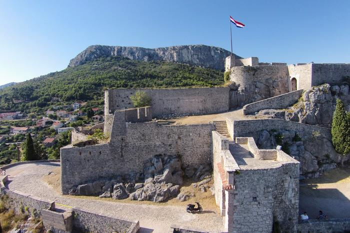

Adriatic beaches, outdoor activities, travel tips, culture and fun, interesting facts about Croatia
The loveliest beaches of Riviera Makarska
Riviera Makarska is perfect for enjoying everything summer brings along thanks to its long pebble and sand beaches and lots of sunny hours. Besides the biggest city of Makarska, little tourist towns like Brela, Baška Voda, Igrane and Tučepi are favourites in the Riviera. And especially so among families with children and everyone looking for their place under the summer sun. But Riviera Makarska also hides beautiful naturist and isolated beaches.
Nugal beach near Tučepi has been a popular summer destination for everyone who loves to swim without any clothes for more than 30 years. As most naturist beaches, the Nugal beach is a bit isolated. To reach it, you'll have to walk for about 30 minutes through the woods called Osejava which connects Makarska and Tučepi. Considering the bumpy terrain, we recommend not walking in flip-flops but sneakers. The beach is surrounded by tall rocks which only make it even lovelier and protect its swimmers from curious gazes. Don't forget to bring some food and drink, and put a lot of sunscreen on since there is no natural shade.
The most beautiful beach in Europe in 2004, Punta Rata beach is also on our loveliest beaches list. Punta Rata is a pebble beach with a sandy entrance so it's great for families with children. The beach is surrounded with tall pine trees providing nice shade and that's ideal when you wish to take a break from the sun. The beach is even lovelier because of an unusual round rock which stems from the sea and became its recognizable symbol.

Game of Thrones 2019. A guide to shooting locations
In order to entertain fans around the world as they wait patiently for the final season, Game of Thrones producers has decided to create an interesting campaign where 7 locations around the world have been chosen where "Iron Throne" was set up. Every week through social networks, fans tried to guess the country where the throne was set. Many tourists, on the other hand, looked for another way of entertainment before the start of the spectacle and decided to go to King's Landing (Dubrovnik) or Klis (Meeren). It is well known that Dubrovnik, Klis, Trogir and many other places in Croatia played an important role in the series. Because of their beauty and preservation, historical sites which are at the same time the main site of the series, are one of the most visited destinations in Croatia. Interestingly, it was not necessary to use a lot of special effects to turn Dubrovnik into King's Landing. Many of the locations in Croatia will, thanks to the final season of Game of Thrones, become more desirable for many tourists this summer, so we decided to compile a list of locations where one of the most important scenes was played.
Do you remember the place where skilled manipulator Lord Varys and Ollen Tyrell negotiate their alliance or where Sansa seeks advice from Lady Ollene about marrying Joffrey? Those scenes were filmed in this place. Arboretum is located in the place next to Dubrovnik, Trsteno. The interesting fact is that this is the only arboretum on the Croatian part of the Adriatic coast and was founded in 1948 on the land of the old Dubrovnik family Gućetić - Gozze from the 15th century. This historic renaissance garden contains a large collection of exotic plants and beautiful Baroque fountain with Neptune. If you find yourself in this place, you should check out a wonderful view of the sea and surrounding islands.
Maraschino - liqueur that smells like Zadar
One of the most interesting elements of vacation is getting to know the local culture and customs. Every place that you visit will enrich your experience with stories about its history and its culture, and also amaze you with its gastronomy and authentic drinks.
When you visit Zadar or its surrounding area, be sure to try the authentic local liqueur - Maraschino. It is an original liquer that is made of matured cherry fruit of special kind, authentic in Dalmatia, called maraska. It is specific by its characteristic sweet taste, which has been reserved in the past for a small group of privileged people who were enjoying it for its medicinal properties.
Maraschino has a long tradition going back to 16th century. It's original recipe was written down in a Dominican monastery in Zadar, but its popularity has risen in 18th century with the increase of trading and manufacturing in area.